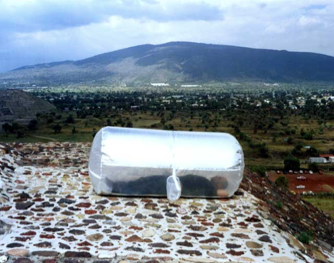
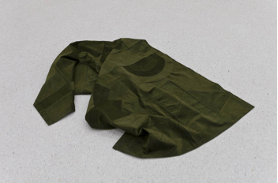

1. Richards, Greg, Wilson, Julie. The Global Nomad: Backpacker Travel in Theory and Practice. (2004)
2. Abendroth, Uta "At Home - What's That?" Stylepark, September 2014, article here.
3. The Free Dictionary, November 2014, article here.
4. "Nationality at Birth and Collective Naturalization" Legal Information Institute, November 2014, article here.
5. Kannisto, E. Global Nomads: Challenges of Mobility in the sedentary world. (Tilburg, 2014)
6. Kannisto, Global Nomads, chapter 7.2
7. OECD-UNDESA. World Migration in Figures. (2013)
8. Iyer, Pico. "Where is Home?" Ted Talk, June 2013
9. "So Ho Suh: Home Within Home" Lehmann Maupin, November 2013, article here.
10. Berger, John. And Our Faces, My Heart, Brief as Photos (2011)
11. "Bio" Anna Rewakowicz, November 2014, article here.
12. "Installations" Anna Rewakowicz, November 2014, article here.
13. "Microtopia" NPO, april 2014
14. "Microtopia" NPO, april 2014
15. Cowan, Gregory. Nomadology in architecture: ephemerality, movement and collaboration. (2002)
16. Gilbert, Jeremie. Nomadic Peoples and Human Rights. (2014)
17. Richards, Wilson, The Global Nomad: Backpacker Travel in Theory and Practice, page 4
18. Kannisto, Global Nomads, chapter 1.1
19. Bauman, Zygmun. Work, Consumerism and the New Poor (2005)
20. Kannisto, Global Nomads, chapter 2.1.4
21. Elliot, Anthony, Urry, John. Mobile Lives (2010)
22. Kannisto, Paivi and Kannisto, Santeri. Free as a Global Nomad: An Old Tradition with a Modern Twist. (2012)
23. Boym, Svetlana. The Future of Nostalgia (2001)
24. Boym, S. The Future of Nostalgia
25. Screpanski, Kristina. There's no place like home (2013)
26. Glenny, Tamara. "Ikea Effect" Wwword, November 2014, article here.
27. Carriere, Kevin. Making a place into a home: The Affective Construction of the Feeling<>Being Differentiation. (2013)
28. Lincoln, Sian. Youth Culture and Private Space. (2012)
29. Edensor, Tim. National Identity, Popular Culture and Everyday Life. (2002)
30. Brady, Owen E and Maus, Derek C. Finding a Way Home: A Critical Assessment of Walter Mosley's Fiction. (2008)
From House
to Home
By Mirte van KootenRoyal Academy of Arts, 2015
From House
to Home
to Home
0.0 The Starting Point
The first half of 2014 I have lived in four different places, which, geographically, are opposites, spreading over different continents. The longest distance between the 'homes' I had claimed was 8500 km, while the shortest distance between two places was a little over 13 km. One place I have called home for 10 years of my life, another for only 3 years. Another one I have been visiting for over more than 4 years and the last one was only my home for a little under 4 months. Even with all these numbers, it's not possible for me to draw a clear conclusion on what I would call my home. At one point, the most foreign place made me feel more at home than the one place I have lived a decade of my life.
So with all these solid facts we might try to define our homes with, how come they don't seem to add up for me in the most logical answer to 'what was my home during this period of half a year'? What exactly does this 'home' mean and in what can I find it? It sounds like a rather simple concept - a place / area where we feel at our most comfortable. However, there is more to a home than a geographical place we are used to. It may be that a geographical home has lost some of its relevancy now we're able to travel and settle wherever we wish.
By reading this thesis, I would like to offer you a way to come on a journey with me in search of home. The term 'home' sounds so certain and is something we experience and rely on every day. It's a constant we are supposed to have. We have on one hand this very solid idea of a home, or perhaps a house, but somehow the feeling of home is hard to grasp. By taking the road towards the most abstract definition of home, we will be able to determine better whatever makes us feel at home.
0.1 Preparations: The backpack
During the journey of finding out what makes us feel at home, we need to take certain objects to make it as comfortable and effective as possible. The backpack is a perfect container to store all the things we need, such as food, maps and knowledge. It is also a good way to collect the things we encounter. These encounters, the discoveries we do while going on travels, might help us get closer to answering our question of what is home.
In The Global Nomad: Backpacker Travel in Theory and Practice, it's mentioned how the backpack is an iconic image of the backpacker traveller.1 It's a symbol of today's increasingly mobile world. Backpackers carry with them not only the emblematic physical baggage that gives them their name, but their cultural baggage and as well. This cultural baggage contains knowledge of experiencing home in different places and under different circumstances. Eventually, this might help draw a conclusion on what is home.
This definition of the backpack (and the backpacker) is the first form of finding a home someplace besides your own 'true' home. Travelling is like taking flight to experience all these small homes, before returning back to your own. The home is still a steady factor within travelling, since it's the place that will be returned to after being away for a period of time. Some travellers might find a new or even a familiar home on the road. What is it, except for the physical building that we associate with our only true home, that might provoke this feeling of being at home?
I'm trying to define whatever it is that makes you feel at home when, especially nowadays, home is not fixed at a specific place, but rather a flexible variable or feeling. The dynamics between being at home and feeling at home offers an investigation in our personal needs and the adjustments of our needs to fit the environment. In this research, my own interest towards home is the starting point, but it will become broader than my own personal look on this subject. Every person relates differently to this subject, since it in fact is a very personal emotion we all experience in our own unique way. I will approach this research from a western point of view, since this is the environment I can relate to best. By talking to different people in my surroundings about their perception of what makes them feel at home, I try to set out a spectrum in which we can sort the different things that make you feel at home. In this way, the variety of aspects I encounter will become clearer by ordering them. I will do this by starting at the first definition of a home we come across, which is the physical building we dwell in. After that the journey in search of the definition of a flexible home will continue. First this lies in the most common 'flexible homes' we can think of, but this exploration will end with more abstract things such as possessions and objects, feelings, memories or stories. The most solid form of a home will slowly disappear, as we go from big to small. During the research I will refer to several artists dealing with these problems. I will look at how they visualize them and give more insight on the subject in a visual way.
1.0 The Foundation of Home
At the end of the day, you will return home. It's the place where your belongings are and possibly your loved ones. It's the stable factor in your life, because it's the place you always return to in that period of time. What is the first standard of home we experience? What is the first thought we get when we think of 'home'? We will start with our most solid and stable thoughts on the term home. The fixed foundation of our home is both a building and a nation. How do these help us feel at home?
1.1 Home as a building or structure
The starting point of finding our home is at the very beginning. A fixed place we find ourselves in this right moment. It's the most iconic form we can think of for a home. The first association with a home we have is a physical building. A building, with a triangle shaped roof, two walls, a floor, an entrance in front and a window on the side. Include a font lawn and the neighbors, and a home is there. A place you have been sleeping in, eating at and returning to for the past period of time, may it have been a few hours or a few years. It is the touchable base you feel belongs to you, or perhaps you share with others. A home is the stable place in our lives.
I wanted to get a general overview of the first impression of what makes a person feel at home. I decided to do a small research on questioning this to random participants. The website www.omegle.com is a place where you can ask such questions to a complete stranger from anywhere over the world. After posting the question: "What makes you feel at home?" the variety of people actually mentioned similar things.
What makes you feel at home?
Stranger 1: home
One answer I received very often was the answer 'home' or 'my home'. I feel like this refers to the actual building people consider their homes. It's the building they legally own. It seems that when people start to think of the concept of home, they automatically think of this physical structure instead of whatever defines the structure itself to be called a home.
One other first thought people have to the word 'home' is that home is the place you return to most.
What makes you feel at home?
Stranger 2: my home
Stranger 1: Automatically connecting to the internet
Stranger 2: true that
Stranger 2: means u have been there alot
As mentioned by these strangers on Omegle, with the silly example of an automatic Wi-Fi connection on your phone, home is the place you visit very often and therefor are familiar with. It's the place that's the base you return to after leaving. We can define this sort of home as our house.
What could be the meaning of this structure or building we use as our home? On occasion of the London Design Week in September 2014, a project called A Place Called Home was launched.2 The project revolved around four house shaped huts, each 4.6 meters, with a hip roof, on London's Trafalgar Square. Six designers were asked to create the interior for these new homes, with in mind to create their own 'home' within this same structure. The outcomes were all very different and showed how, out of this starting point of the hut, all designers were able to form this structure to their own definition of home.

What makes a house a home? On the occasion of the London Design Festival, four designers created houses on Trafalgar Square. Photo © Ed Reeve, London Design Festival
It shows that by taking this structure of a building or house, it's always possible to create your own interpretation of home inside. It's a stable element that can be easily transformed to people their needs. Even though everyone has the same walls and a roof as a starting point, every individual can transform this into their own personal home.
1.2 Home within citizenship
From defining that home is this physical structure at a certain place, how come we settle at such a place? The answer to this might be in the definition of home in the dictionary.
home (hom)
n.
1. A place where one lives; a residence.
2. The physical structure within which one lives, such as a house or apartment.
3. A dwelling place together with the family or social unit that occupies it; a household.
4.
a. An environment offering security and happiness.
b. A valued place regarded as a refuge or place of origin.
5. The place, such as a country or town, where one was born or has lived for a long period.3
In the dictionary home has several definitions. It's a place where one lives, a physical structure where a human can function. Another definition is a place, such as a country or town, where one was born or has lived for a longer period of time. Another point is the place you share together with family.
Taking these several definitions, they come together as the determining factors of being a citizen of a state. Mentioned in the U.S. Code, laws made by the United States Congress, there are several laws that consider you a citizen of the state. The most up front ones are either being born in the US and being born outside of the US with parents that both have citizenship in the US.4 Considering this, our first definition of home could be citizenship and taking part of a nation you enter by birth. This is literally the first home we experience from the start of our lives.
Citizenship is a mandatory community we automatically take part in. This criterion of citizenship is one thing that keeps us legally attached to a place.5 This citizenship and the related set of responsibilities we get with it, is a strong influence to the first choice of a home. The place where you pay your taxes and go see your dentist is eventually the place you always have to return back to - whether you want it or not. It's a custom we participate in because it feels natural to do so from the start.
As a citizen you contribute to the society, after which you gain rights in return for these obligations. Those who try to take distance of their citizenship and leave this system, get in trouble. It's not accepted to get more from the society than you give back to it.6 It's a tight system designed to make life easier and more secure. Since security is one of the mentioned factors in the meaning of home, citizenship is a logical choice to start building a home.
These facts about citizenship might sound dry compared to the romantic idea of 'feeling at home', but it tends to be one of the factors that help you feel like you belong to a certain place. A friend who has been living in London for two years, who was back in the Netherlands temporarily to wait for a visa for Australia, mentions this as well. Not being registered in any nation at the moment, she says how she feels like she doesn't belong somewhere. It's more of an in between place before settling somewhere. The missing of this security can leave a gap in feeling at home.
This solidity is the first place we start in defining home. A building is a structure that can offer you shelter. The fact that you can customize this to your own needs helps create it to a proper home. The nation we take part in offers us security and comfort, as things are arranged for us to easily engage in. It's a firm and stable shape that offers us our first needs for functioning in a familiar environment.
2.0 The Location of Home
When we look back at the structure of a house, this building, the first thought is that it's probably at a fixed place within this nation. It's presumed that this location is not difficult to define. It's probably the place a person was born and raised. However, some 532 million international migrants are living in the world today.7 These people have probably experienced living in several places, and therefore might be torn between choosing a home. Then there are also many people who do not have the luxury to have a building to call home. They are forced to move places whether they want it or not. They will have the need to find a more flexible definition of home since they cannot fix it to a certain place.
What does finding a home look like when the place is not fixed? How do people cope with the definition of a home when they have experienced several ones?
2.1 The home country
Defining a fixed home, like mentioned in chapter one, is not easy for every single person. In some cases it's not as upfront and easy like this. What if you consider different places a home? Pico Iyer (1957), a British-born essayist and novelist, describes in his Ted-Talk how it's complicated to call a place a home when you have experienced several ones.8 The first association with home is this place of your roots. It's the place you associate with your parents. Iyer mentions how people expect him to say India is his home, since he's from Indian origin. The thing is, he has never lived in India a day in his life. So perhaps home is the place where you were born, raised and educated, in Iyer's case England. But what if one has left the country right after completing undergraduate education without having felt a real connection with this place?
Then you might look for home in a different place. It could be the place where you pay your taxes, go to the doctor and function as a citizen in the society. This is the place where you happen to be at the moment that could be considered as a home. However, maybe the meaning of home is the place you want to be and try to spend most of your time. It could be the place you're dreaming of living, even though you might not even be close to be considered a habitant of this place.
Having all these different places and several options of a home, it's getting tougher to discuss whether home is really tied to this certain place you have grown up at. This place gets less relevant and different factors depending on time and place together influence this feeling of home. Feeling at home soon has nothing to do with being fixed in a place but could rather be seen as a life trajectory where home is not about roots, but rather about routes that change continuously.
Since it's easier to travel places these days, people are getting more international and multicultural than a few decades ago. This makes it difficult to maybe mention one place to call home, since there are several places that have an influence. Iyer mentions how a lot of people take little pieces of each of these 'homes' to create a new one.
One example of an artist who plays with the definition of home at several places in many of his works is Do Ho Suh (1962), a Korean sculptor and installation artist. After moving from Korea to the United States, Suh has been working on installations that touch the physical distance between different places. One work of Suh, called Home Within Home Within Home Within Home Within Home is an installation that shows a life-size fabric replica of his first house in the United States and a replica of his parents' traditional Korean house in Seoul, hanging in the middle of the former.9 The 'withins' in Suh's artwork play with the layering of defining home in a place, as he relates the Seoul box in the museum to the city, the country and the world we live in. Here he plays with the ever-expanding concept of space and therefor does exactly what Iyer points out; creating a new home with the components of homes from the past by combining these to form a new one. He shows how it's possible to consider different places a home.

Do Ho Suh's Home Within Home Within Home Within Home Within Home shows the traditional, Korean house of his parents' compared to his house in the US. Photo © MMCA, Korea
2.2 The flexible home
Because nothing in today's world is near or far anymore, being abroad no longer means being away from 'home'. A quote by John Berger (1926), an English art critic and artist himself: "Home is represented not by a house, but by a practice or set of practices. Everyone has their own."10 We're getting further and further away from this idea of a fixed structure, and we don't limit ourselves to this small area anymore.
One person who lives by this motto is Ana Rewakowicz, an artist based in Montreal with Polish descent, who explores the relations between temporal, portable architecture, the body and the environment by using inflatables.11
In 2001, Rewakowicz covered an entire room in her apartment with multiple layers of rubber latex, which, once it was set, would form a transportable 'skin' of this room. It would transfer the original moldings and cracks, but also other remains, like dirt and hair. By creating a second layer, she could inflate this room and create this installation, called Inside Out, which would give you an unsettling experience within this space. It would give the illusion of the stability and comfort we expect from a space like this, but inside this air-inflated room there is nothing to hold onto when losing your balance.12
Three years later she decided to take her inflatable room on a trip through Canada for the period of one month. At different sites she would camp in the room, by trying to connect the ideas of 'home' and 'nomadism' with the very impractical 'tent' that would collapse after two hours of being inflated.

Rewakowicz' Inside Out. Photo © Ana Rewakowicz
This starts playing with the idea of a flexible home. How does a home look like when it's not fixed to a certain place, but can still be considered a structure for dwelling? American Jay Shafer calls himself a 'Tiny House Designer'. When he decided he did not want to contribute to a household that's bad for the environment, he started to build a house that is as small as possible, but with all necessaries for him to live in.13 He takes away objects he doesn't need so he creates optimized necessarily, since he feels that that way life feels more necessary. One of the four tiny houses he has lived in was designed to be small enough to park on a car parking spot, just in case he might need to have to sleep on the streets of California.
"By putting a house on wheels, [the house] is no longer a building, doesn't have to be built by building codes, and you can build It as small as you want." 14
Shafer designed a house on wheels just to dodge the law in the US, but by doing this, opened the possibility to use his house as a moving building. By just avoiding the law, and making sure the structure isn't too high to hit viaducts on the way, it became a proper 'flexible home'.

The Gifford. Photo © Jay Shafer
Even though in chapter one the idea of a fixed house was explored, we have now found alternatives of adjusting a living space to meet a desire for movement. A home could be sized down to just its necessities and personal needs. This flexible home reminds us of, for example, a camper.
Another image that comes to mind is the tent, which is a simple dwelling, but has the ability to fit a person's need in a broad sense. It's a flexible shelter, which can be brought along with a person, and could be seen as an extension of the individual and their clothing. Whether tents are to be considered as real architecture or not is whatever makes them more interesting in the perspective of feeling at home. It rather becomes an object that could be carried close to you. As the historian Arthur Upham Pope (1881 - 1969), cited in Architecture without Architects-catalogue, describes:
"The magnificent structures have been the pride of monarchs of Western Asia for thousands of years, fabrications huge in size, very costly, and even if not permanent, often of extraordinary beauty." 15
A tent can be customized to its environmental context, with the absence of solid walls and sealed doors and windows. It makes its composition a practice and the idea of a home extremely personal since it becomes an extension of the person himself/herself.
Besides the latex room, Rewakowicz has also been working on the SleepingBagDress, which is basically a multipurpose kimono-dress that, when inflated, changes into a container inhabitable by one or two people. It looks at the portability of a wearable cell, comfortable as both a dress and a temporary shelter. This definition of a tent as an extension of the individual and their clothing becomes real in this project by Rewakowicz, and makes this flexible home as easily transportable as the person wishes.

SleepingBagDress. Photo © Ana Rewakowicz.
With the mention of the tent a new door opens to completely flexible living. It's on the intersection with having a flexible structure of a home to it being an object that refers to a home we maybe have once known.
3.0 The Moving Home
We've been looking at the motivations of creating a flexible home. The starting point is clear: one cannot define just one place a home. Living a life without a fixed place doesn't mean one might not feel at home, even though others solely consider this building and place as a home.
Then what is the thing that makes a person feel at home whenever they are not in or with this 'house' that was defined as a home in the first place? The analysis starts with looking at people who actually live this lifestyle. What is the reason of moving around and how does a person feel grounded and at home being at several places throughout their lives?
3.1 Nomads
If we want to look at how it is to live flexible, but to be still able to find a home in several places, we have to look at nomadism. The idea of home starts shifting to nomadism now, which denies the dream of a homeland. This results that home, being portable, is available everywhere.
Nomadism is a mobile way of living that's organized around cyclical or seasonal patterns.16 It refers to a group of people who practice spatial mobility to enhance their well-being and survival. These were usual motivations for groups to live a nomad life. While nomads were often seen as 'wandering' across the lands without any specific patterns, now can be seen that the mobility is really a result of strategy depending on survival.
The definition of the word nomad can be traced back to the Greek nemein: 'to pasture'. A nomad is defined as a member of a group of people that travel from place to place to find fresh pasture for its animals and has no permanent home. The other important definitional feature is the reference of a mobile and non-permanent habitat, or maybe only having a fixed home for some part of the year.
Another interesting thing is that most traditional nomads move in groups, since the environmental change affect everyone. The word 'home' originated from the old English word ham, which basically means a village, estate, town or place where many souls are gathered. It implies on a physical place where dwelling is involved in larger amounts of people, rather in packs than in singles. This gives the idea that feeling at home as a nomad might relate to the idea of family and other people surrounding you. This because simply no people will choose to stay behind when there is no fertile land available for them.
3.2 Global Nomads
Some say travelling has become an icon of the rootlessness and alienation of modern life.17 Globalization not only increases the speed at which cultures are marginalized, but also increases the speed with which the tourist can travel to see them. Therefore, the whole world is open to question our home and to take a second guess at where this might be. With the globalized world of today, there are many cases in which people leave their place of origin to either travel to discover new places or emigrate to settle at a new home.
Similar like traditional nomads, I would like to introduce the global nomads. With different motivations than nomads in communities and living in different locations because environment requires them to, global nomads choose to have a lifestyle without having a fixed abode, place of employment. Some of them have parted from their country of origin. As Kannisto mentions, they are homeless, or -depending on your point of view- at home wherever they happen to be.
Global nomads choose to avoid the sedentary societies that are built with the intent of making things permanent and continuous. By making this choice of not being an official citizen, and therefor to be 'homeless', they experiment with the feeling of home without it being tied to particular territories.18 As sociologist Zygmun Bauman (1925) says, they are 'people of many places but no one place in particular'.19 They don't live within the safety net of a society.
Global nomads are not to be confused with long-term travellers. Even though they make extensive journeys, they always have a territorial home as an important reference point. Their tie to this place is strengthened by the future thought of returning back to it.20 In the book Mobile Lives, it's mentioned how the mobility's lived by global nomads today seems more rootless and is not necessarily connected to a home, but more to several homes dotted throughout the world.21
Some might make the goal of travelling to come back and to contribute to society of what they've learnt. Global nomads don't have a goal like this, since they don't have the need to return back to a certain place after their travels.
So what is home for someone who is always moving? Constantly changing places alters the concept of home, which is exactly what is happening with the global nomads. Home could for example be something that's your meaning of transport, like a car or a boat, or something you always take with you, objects like your laptop or files. The conclusion is either that home is everywhere, or home is nonexistent.22
Without having these stable factors to come back to and call home, global nomads are left with other factors, such as the travelling itself, adjusting to new places, trying new food and meeting new people over and over again. Acts, objects and people are the untied form of a home in this case.
4.0 The Liquid Home
Since now we can conclude home is not always connected to a real place, as we found in chapter two and three, the feeling of home is, in essence, a personal link to the imaginary. This is where home clearly becomes a liquid form. Memories to former, familiar places and happenings can help to trigger this sudden feeling of being home. It has not always something to do with a solid structure or rules of a nation, or with a flexible, movable home, but it becomes a custom in daily routines. What provokes this feeling within objects and the triggering of our senses?
4.1 Home in objects
We have all once thought about the question of what you would take out of your house first if it were on fire. Besides any loved ones and animals, objects remain. In a lot of cases this object is not the thing that's most valuable in money, but rather has a big emotional value. It's an object with a lot of memories attached to it, maybe linked to a person or a place. These familiar memories towards this one object could be a component to make a person feel (more) at home.
The word nostalgia is a formation from the Greek words nòstos, which means homecoming, and the word álgos, meaning pain or ache.23 Nostalgia can be a feeling that can be felt towards an object that triggers memories. This nostalgia towards an object actually helps to form a home. It takes these feelings of home of an earlier 'elsewhere' and connects them to one's present home. This way home becomes an interpretation of more than one location throughout objects. Another way to see how nostalgia can form this new perception of home, as quoted by Svetlana Boym:
"To feel at home is to know that things are in their places and so are you; it is a state of mind that doesn't depend on an actual location. The object of longing, then, is not really a place called home but this sense of intimacy with the world; it is not the past in general, but that imaginary moment when we had time and didn't know the temptation of nostalgia." 24
How a home can be formed by the use of objects is something that artist Maria Loboda (1979) shows with her work Abstract Rug.25 In the There is no place like home exposition in the Westfalischer Kunstverein in Munster, she shows the carpet which is placed in a different position within the exhibition every week. As a personal piece of decoration and home accessory, this carpet symbolizes the feeling of home in a new place. Yet, at the same time, its alternating position changes our perception. In this way it makes the concept of 'home making' real.

Abstract Rug by Maria Loboda. Photo © Thorsten Arendt
In this case, we assume the object has to be personalized or one of a kind to have a meaning like this. We can imagine that, for example, a handmade object that is one of a kind, has extra emotional value. However, this might not always be the case.
One thing to question is that home might not be solely based on personal artifacts or objects. Due to industrialization and mass production, objects are not as personalized as they once were. Stores are selling the same products over and over again. We use those to form our new homes now naturally.
Everyone has heard of an 'Ikea-home' - referring to a house filled and personalized with just Ikea products. Many people have the same Billy bookcase or Klippan couch, but even though they are industrialized products and not personal on first sight, they still add on to the feeling of home in most households. And even though Ikea tries to create this homely feeling by using 'feel good' and raw materials like raw wood and chest, metal and soft textiles, this is not necessarily the thing that makes Ikea furniture so comforting to people.
The thing that does create a personalized touch to Ikea furniture is the assembling of the Ikea products. We feel a sense of pride and ownership for these objects because we have put our own labor in setting these products together.26 Setting things together with our own hands, even though they are pre-made and result into the same thing 99% of the time, gives us back this personalized feeling we long for in a home. Again, it triggers the memories that help you feel at home and this is what gives it emotional value.
4.2 Home in the invisible
Touching on the feelings of nostalgia in objects shows there's mostly a story or memory behind a certain object, which makes us care extra about it. Perhaps we don't feel home in the object itself, but because of the memory or story behind it. A question is, can you feel home in something that is not physical? Maybe this feeling of home also appears within a story, when one listens to a song or smells a familiar smell.
A researcher at the Clark University, USA, examines an example of this. One of the participants in his interview about the cause of the feeling home, told that he was in a synagogue far away from his considered home, but he 'felt very at home' because they would play the same tune that he recognized.27 This made him think of a personal connection between him and his grandfather. Here the person visited a distant synagogue and upon hearing a family hymn is overcome by the complete feeling of home. While the synagogue may not be his home at all, the feeling of home appeared within this different place.
Another example is where smell can create a particular atmosphere and therefor trigger nostalgia, memories and this part of the feeling of home. There's often the mention of how a home smells like a person.28 For example, the smell of washing powder or the smell of a certain perfume can remind you of people and places that you associate with a comfortable place. This might act like a great comfort and with familiarities come the feelings of safeness and security that one might associate with feeling at home.
The senses work to create a particular atmosphere in spaces together with maybe visual elements. Senses are not as easy to grab as perhaps visual aspects. As described in National Identity, Popular Culture and Everyday Life by Tim Edensor:
"A fortuitous and fleeting smell, a spidery touch, a motion, a bitter taste - almost beyond our conscious ability to bid or concoct or recreate - home is thus an evocation that is of this sensory world, ephemeral and potential in the least familiar. Suddenly, when I least expect it, I am enchanted. I hold my breath at the silent transposition of a melody. Thinking about 'home' is like being given a hunting license for anamnesis, or reflection on those things which enthrall me without my knowing why." 29
This shows how home can not necessarily be created with these smells or a certain taste, because many times the feeling of home related to these things take us by surprise. It might be a smell not able to create again, or a certain noise that went by unnoticed before, but suddenly triggers the feeling of home.
5.0 Conclusion
Throughout this exploration on the feeling of home, there are a lot of things I stumbled upon that can make a person feel this way. I found there is not a standard recipe or rulebook we can follow to become familiar and secure at a new home immediately. It's a mix between several factors and one person might need more of these factors than another person. It was difficult to come to one solid explanation of this feeling and abstract 'thing'. I do feel like I was able to create some sort of spectrum to divide different thoughts within. As we moved from solidarity and big to liquid and small, home can define itself within different assumptions.
The most logical, first answer on 'what makes us feel at home?' is the assumption of a dwelling we can live in. The fact that one owns a building or dwelling gives the security we assume with home in the first place. It is, literally, a stable factor in your life. When going places, it's the place you always return to, whether you're travelling or going to work. With this comes that it's fixed in a place, to which we are legally attached. Being a citizen of a state helps form the foundation that we prefer because of its security and comfort.
Even though fixing home at a certain place sounds like an easy decision made, having lived in a place different from your descent might make this idea a little more complex. This is where the theory of taking tiny pieces of several homes and taking these to different places comes in play. Dwellings that are not necessarily attached to a place are the first step from breaking this solid form into tinier pieces. More and more people long to live as flexible as possible. The form of a house changes to match these needs. A home/house can still contain a structure but be flexible at the same time. This flexible home meets the needs of moving constantly.
Flexible living is a thing that happens more and more these days. With global nomads moving over the earth without having this house to return back to after their travelling is 'done', home is formed on the road. They become people of many places and are officially homeless, but somehow make this flexible lifestyle work. Instead of the most logical assumptions we had in the first place, the feeling of home can be experienced in many different ways. The feeling of home can be there without having this fixed structure.
Objects can provoke this feeling of home. The feeling of nostalgia, which is the longing for other times that were experienced in the past, might be triggered upon seeing a certain object with emotional value and memories attached to it. With these assumptions of past 'homes' you get from feeling nostalgic, one can build a new home attached to these feelings. It makes you feel comfortable and helps you adjust to your current home.
Another thing that is very important in sparking nostalgic feelings, are our senses. A smell or tune can have the same effect as an object. It doesn't have to be visual to feel attached to something in this way. Someone telling a story might be enough to initiate the forming of home.
So what is it in the end that might provoke the feeling of home when considering different forms of a home? It could be a fixed, structured thing with a secure foundation. This would be the most solid form that provides a comfortable way of living as a human being. However, home could be stripped from this comfort and transform in a small home on wheels or a tent, in other words, a flexible home. Whoever can't conclude one place as their true home, the option of combining and living in several ones is also a possibility. Then there's also the idea of taking home with you everywhere, may it be in an object or product, or a memory, story or smell. A wide range of things can trigger this feeling of home.
The concept of home can no more be reduced to geographical or physical environments, while in some cases it might suffice, but for others it doesn't. Home refers to something with which the individual can identify - even abstractions can represent a spiritual home as much as a physical one. It's all about how the individual experiences this feeling of home.
"The relationship between home and self is reciprocal: home defines the individual, yet the individual defines home through choices about values, human relationships and self-expression. Individuals are both made by and makers of the ideological and emotional complex called home." 30
5.1 Discussion
There are several points on this research that I did encounter, but did not include in my research to keep from sidetracking.
One big aspect I did not get into a lot is the social aspect of feeling at home. As the well-known saying 'home is where the heart is' mostly implies to, is that home is where your loved ones are, wherever that may be. It's a whole different point of view in defining what our perception of home can be.
Another point I did not include is how the feeling of home is experienced worldwide. I now focused on a western point of view. We might have a more materialistic approach to forming our homes than others in this world. Other's their trigger of feeling at home will probably be different to ours at many points. Also there may be people who do not have the opportunities to form a home in different places in the world and are forced to form home in this fixed place they have access to. There are many places where people can not afford a house to make into a home, and are required to find the feeling of home within bad living conditions. It's not fair to consider this thesis a worldwide view on this subject, since others may have the need to other things compared to the western society.
Sources
Literature
Bauman, Zygmun. Work, Consumerism and the New Poor (2005)
Berger, John. And Our Faces, My Heart, Brief as Photos (2011)
Boym, Svetlana. The Future of Nostalgia (2001)
Brady, Owen E and Maus, Derek C. Finding a Way Home: A Critical Assessment of Walter Mosley's Fiction (2008)
Carriere, Kevin. Making a place into a home: The Affective Construction of the Feeling<>Being Differentiation. (2013)
Cowan, Gregory. Nomadology in architecture: ephemerality, movement and collaboration. (2002)
Edensor, Tim. National Identity, Popular Culture and Everyday Life. (2002)
Elliot, Anthony, Urry, John. Mobile Lives (2010)
Gilbert, Jeremie. Nomadic Peoples and Human Rights. (2014)
Kannisto, E. Global Nomads: Challenges of Mobility in the sedentary world. (Tilburg, 2014)
Kannisto, Paivi and Kannisto, Santeri. Free Global Nomad: An Old Tradition with a Modern Twist (2012)
Lincoln, Siân. Youth Culture and Private Space. (2012)
OECD-UNDESA. World Migration in Figures. (2013)
Richards, Greg, Wilson, Julie. The Global Nomad: Backpacker Travel in Theory and Practice. (2004)
Screpanski, Kristina. There's no place like home. (2013)
Movies
"Microtopia" NPO, april 2014
Iyer, Pico "Where is Home?" Ted Talk, June 2013
Online articles
"Bio" Anna Rewakowicz, November 2014, article here.
"Installations" Anna Rewakowicz, November 2014, article here.
Abendroth, Uta "At Home - What's That?," Stylepark, September 2014, article here.
Glenny, Tamara. "Ikea Effect" Wwword, November 2014, article here.
"Home" The Free Dictionary, November 2014, article here.
"Nationality at Birth and Collective Naturalization" Legal Information Institute, 2014, article here
"Do Ho Suh: Home Within Home" Lehmann Maupin, November 2013, article here